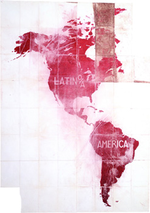

An Atlas
January 16 - March 15, 2009
Basekamp
723 Chestnut Street
Philadelphia, PA 19106
215 592 7288
Friday, January 16th @ 7pm: opening reception
* See farther below for weekly events.
An Atlas is a traveling exhibition of artists working with "radical cartography"—a practice that uses maps and mapping to promote social change, and that is part of a cultural movement that links art, geography, and activism. The participating artists, architects, and collectives in the exhibition play with cartographic convention—geographic shapes, wayfinding symbols, and aerial views— in order to take on issues from globalization to garbage.
While mapping in art practice has expanded into technological and performative realms, An Atlas focuses on a traditional aspect of the map as a work-on-paper, and, importantly, its function as a political agent. The latter is underscored by the mapmakers themselves who are committed to social justice within their own diverse practices.
Works include Ashley Hunt's intricate diagram of the social effects of the global prison-industrial complex; the Center for Urban Pedagogy's mapping of the people who make and manage the "garbage machine" in New York City; Jane Tsong's drawing of how nature and culture clash in Los Angeles' watershed; and Trevor Paglen and John Emerson's route map of CIA rendition flights.
Participating artists are:
An Architektur
the Center for Urban Pedagogy (CUP)
Jacqueline Goss
Ashley Hunt
Institute for Applied Autonomy with Site-R
Invisible 5
Pedro Lasch
Lize Mogel
Trevor Paglen & John Emerson
Brooke Singer
Jane Tsong
Unnayan
An Atlas is organized by artists Lize Mogel and Alexis Bhagat. It is a companion exhibition to the publication, "An Atlas of Radical Cartography," (2007, Journal of Aesthetics and Protest Press, Los Angeles.) For more information, please visit
www.an-atlas.com/exhibition.htm
An Atlas is made possible in part by a grant from the LEF Foundation.
TALKS & EVENTS:
Friday, January 16
7-9pm
Opening Reception
7:30-8:10pm
Gallery talk by exhibition curators Alexis Bhagat and Lize Mogel.
Open to public / free admission
Saturday, January 17
2:00-4:00pm
Workshop with Lize Mogel: "Mapping the Global Economic Crisis"
A hands-on mapping workshop on visualizing the causes and effects of the global economic crisis. As non-experts, how do we understand the connections between our lives and the abstractions of global finance?
Paper and markers will be provided. Drawing skills NOT required.
Limited to 15, please email yuka@basekamp.com to reserve.
4:30-6:00pm
Other World Maps
Lize Mogel will discuss her recent work that re-imagines the world map's surface as it is affected by the forces of globalization. This 'geography lesson' will take us from the Arctic Circle to the Panama Canal to the future site of Expo 2010 in Shanghai.
Friday, February 6
6-9pm
First Friday Opening
BASEKAMP is an artist-group and non-commercial space, which has researched and co-developed interdisciplinary, self-organized art projects with other individuals and groups in various authorship-blurring configurations for the past decade. We use our Philadelphia space, along with temporary camps in other locations, as a home base to invite domestic and international collaborative groups in a joint experiment to develop new models of relations within overlapping art communities. The goal is to continue proposing collaboration as a practical and theoretical stance, and to participate in its evolution.